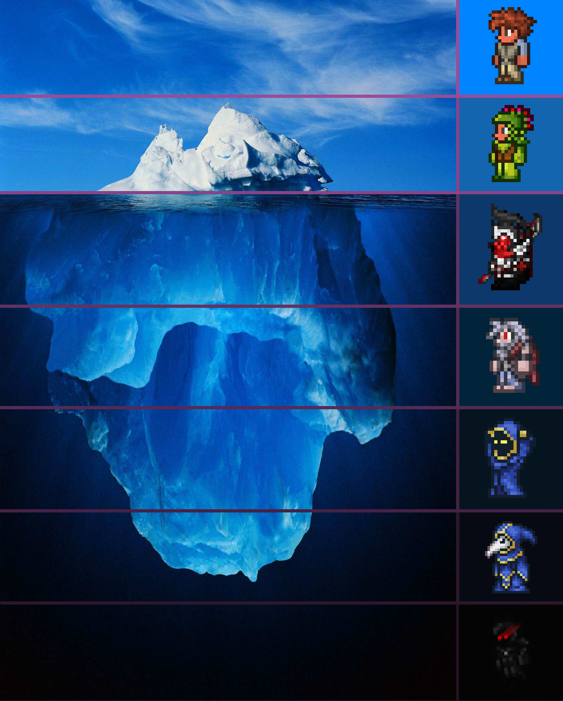

Killing Dungeon Guardian
Hoiks
TPvP
AFK Liquid Dupe
Black Hat in Pryaxis
Astral Projection
Mannequin Player
Chicken Teriyaki
Redcode
Terrarium animation patterns
Transmutation
Popup Title
This is a sample popup with text and an image. Content will vary based on the link clicked.
Close